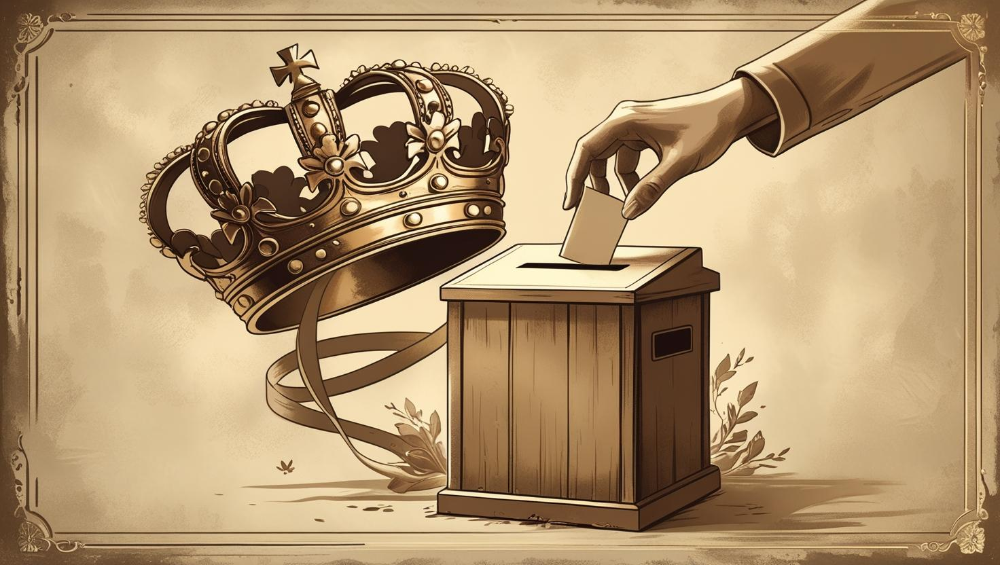

The Birth of Congress and a New Era
When the Lardish Republic officially came into being in 2020, its foundational structure, as decreed by one of its primary architects, Tutita Col, was that of a monarchy. For the initial two years of the USFLR's existence, no elections whatsoever were held. Instead, the King personally appointed all parliamentary representatives, a stark contradiction to the constitutional stipulation that members of the lower chamber were explicitly meant to be chosen directly by the Lardish people. Yet, even amidst this autocratic beginning, the spirit of democracy was quietly stirring. As early as 2021, during his tenure as CEO of Lard Corporation, Lard Lapudding had already begun laying the groundwork for a comprehensive electoral system. These preparations culminated in 2022 with the formal establishment of the Lardish National Electoral Institute, which was officially inaugurated in March 2022 by the Central Lardish Committee.
The newly formed Electoral Institute's inaugural, and critically important, function was to meticulously organize, oversee, and publish the results of a groundbreaking referendum held in April 2022. This event marked a monumental leap for democratic participation in the fledgling nation, representing the very first instance where citizens were directly empowered to participate in significant national decisions. The referendum comprised nine distinct questions, but two, in particular, stood out for their immediate impact and symbolic weight:
Do you consider it necessary to preserve the 'President of the USFLR' position?
Do you consider it necessary to preserve the 'King of the USFLR' position?
This referendum directly challenged the King's established leadership and the very structure of the early government. Yet, in a fascinating demonstration of their initial preferences, the Lardish people ultimately opted to preserve both positions, signaling a desire for stability, or perhaps, a gradual transition rather than an abrupt break from tradition.
The democratic currents continued to churn, leading to yet another significant referendum in
October
2022. This time, voters were asked to weigh in on whether they wished for the USFLR to
become a
constitutional monarchy and if it was considered essential to hold general elections every four years.
Both propositions were met with overwhelming public approval, seemingly cementing a path toward a more
defined, regular democratic process.
However, Lard Lapudding, ever the strategic visionary, perceived a critical flaw in
this outcome. He
swiftly launched a powerful new movement: Republic for the Elections
,
encapsulating its core message
in the compelling motto: If you want elections, we need a republic.
This slogan
cleverly implied that
truly fair and consistent elections could only be achieved through the establishment of a full
presidential republic, subtly undermining the authority of the constitutional monarchy voters had just
endorsed. This persuasive argument resonated deeply with the populace. By November 15,
2022,
the collective sentiment was undeniable; all chambers of Parliament, including the influential
Central
Lardish Committee, had publicly expressed their unequivocal desire to transform the country
into a
presidential republic.
Responding to this powerful mandate, on December 01, 2022, Lard Lapudding, with the crucial backing of the Parliament, the Vice President, and the Prime Minister, officially adopted the presidential republic system for the nation. This momentous shift brought about significant structural changes: the former Parliament was formally rechristened as Congress, and its lower chamber underwent a further division, creating two distinct legislative bodies with specialized roles:
- The Regional House of Lardish Representatives (REHAR): This new body was specifically designed to oversee issues impacting local regions and individual states, bringing governance closer to the people at a grassroots level.
- The House of Lardish Deputies: Tasked with approving bills originating from the REHAR and forwarding them to the Senate, this chamber also held the power to propose new legislation concerning specific states or the country as a whole directly to the Senate.
Concurrently, the former higher chamber evolved into the Lardish Senate, now primarily responsible for deliberating on bills submitted by the House of Deputies, engaging in discussions with the President and its own members, and possessing the authority to directly propose new legislation. Once a bill received joint approval from both the Senate and the President, it would officially be put into action, marking a clear and powerful legislative process.
With the new Congress and the presidential republic system firmly established, Lard Lapudding made a clear and unequivocal promise: general elections would be held the very next year, in 2023, to democratically elect the President, Vice President, and all members of Congress. These eagerly anticipated elections were initially scheduled for May. However, the unfolding crisis of the Three Lardish War cast a long shadow over these plans, compelling a necessary postponement. The vital democratic exercise was ultimately pushed back and held in November 2023. The profound impact of this conflict, and the detailed outcomes of these pivotal elections, will be explored more thoroughly in the subsequent chapters of this historical account.